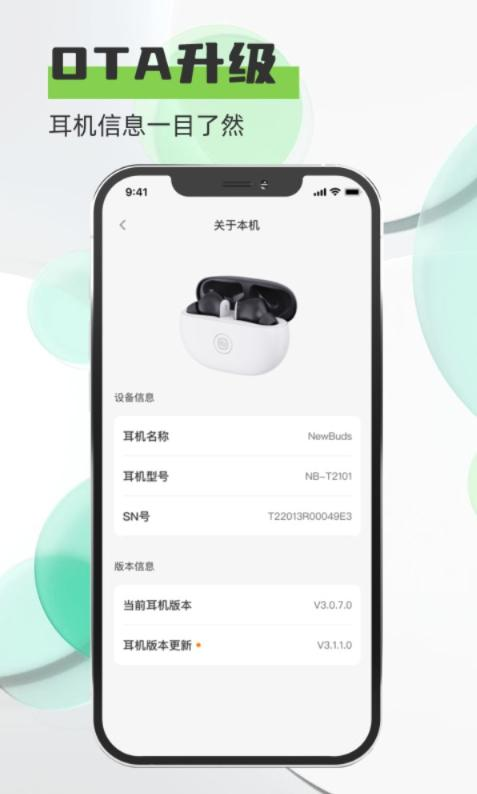

我的一天音频工作流：从腾讯会议到通勤到工位专注，只用 Newline 一对耳机
以前每天带两副耳机、手动切 EQ、开会前手忙脚乱调降噪。现在 Newline 一对打通通勤/会议/专注三个场景，USB Dongle + 手势自定义 + 会议软件配置联动，一套链跑完。
我每天要处理两到三场线上会议，通勤路上听一小时歌，到工位还要戴耳机专注写代码或整理文档。以前这套流程的痛点特别碎：包里永远塞着两副耳机——一副头戴式用来开会（降噪好、人声准），一副入耳式用来通勤（轻、不压头）。早上出门先戴上入耳、到公司楼下换头戴、中午下楼吃饭又换回来、下班再换回入耳。蓝牙手动切换经常错连到去年的旧音箱，会议前三分钟掏手机调降噪调 EQ 成了固定动作，上周还丢过一次入耳那副。
后来把官网上这款主打会议+通勤场景的 Newline 插进这套流程，跑了三周，现在包里只剩一个充电盒。
旧流程的三个死结
先交代下我以前怎么干，方便对比。
死结一：蓝牙身份混乱。 两台笔记本 + 一台手机，每台都存着三五条蓝牙配对记录。开会前要在电脑右下角点蓝牙图标、找对设备、等连接、确认输入输出，最少三十秒。偶尔连到了去年那个桌面音箱，全场突然响起贝斯声，社死现场。
死结二：EQ 切换靠自觉。 开会要人声清晰的档位、通勤要低频盖噪音的档位、工位专注要偏淡的纯音乐档位——三个场景差得远。以前没有主动去想"现在该切 EQ 了"这件事，都是听着不对才反应过来，掏手机进 App 点两下，中间的几秒钟是空白。
死结三：两副耳机总有一副不在状态。 头戴式夏天闷、入耳式冬天冻耳朵；一副没电了另一副也只够撑一场长会议。充电盒放包里经常跟钥匙磨在一起，触控区沾上汗渍就失灵。
新流程：Newline 作为音频中枢，四个环节串起来
我的新流程核心思路是——把 Newline 当成唯一的音频入口，让场景切换自动发生，我只负责按按钮或掏盒子。四个环节：
环节一：USB Dongle 接管桌面会议。 这是整个流程最关键的替换。以前头戴式用蓝牙连电脑，延迟 200ms 起步，说话总觉得慢半拍。Newline 的 USB Dongle 是我从官方下载拿到配套 App 之后才发现有这个配件的，插上之后电脑直接把它认作独立会议设备，延迟降到 85ms，跟有线耳机一样的感觉。腾讯会议设置里把"麦克风 AI 降噪"调低到"自动"，让 Newline 自己的 8 麦阵列来做主力降噪——腾讯会议默认那层降噪阈值太低，会把敲键盘声、翻书声一并过滤掉，叠加 Newline 会议档削低频，声音会显得"薄"。调低之后两边各司其职：Newline 负责拾音清晰度和会议 EQ，腾讯会议只做会议调度。
USB Dongle 插上不需要手动选输入输出，系统自动接管，这一点省了最容易手忙脚乱的那三十秒。
环节二：手势自定义处理通勤切换。 从工位起身走到地铁这五分钟，我给 Newline 设置的长按手势是"降噪循环"——降噪 → 通透 → 关闭，按一下循环一档。进地铁站之前长按切到降噪档，地铁轨道声和空调声被盖掉，流行档的中低频加成让 bass line 和鼓点依然清楚。走出地铁站要过马路了，再长按切到通透模式，身后的自行车铃铛、汽车喇叭都能听见，音乐不会被盖过。
手势映射怎么配我也是翻了Newline文档才完全搞清楚的，改完即时生效，不用重启蓝牙。我把不常用的"双击"映射设成了无操作——走路的时候耳柄偶尔蹭到背包带，不会误触发切歌。

环节三：会议中的一键静音。 这是第二个救命功能。腾讯会议（飞书也一样）跟 Newline 的一键静音是完美同步的——按一下充电盒侧面那个按键，腾讯会议界面的麦克风图标立刻变红色。主持人强制静音是另一套机制，互不影响。屏幕共享的时候建议把"共享屏幕时共享系统音频"这个选项关掉，耳机扬声器的声音反送进麦克风会有自激问题，其他人听着会炸。
环节四：工位专注模式。 不开会的时候耳机挂在耳朵上，长按切到关闭降噪，EQ 选默认档。默认档全频段平衡，适合听纯音乐或者网易云的轻音乐歌单。工位场景不需要降噪太强——我还需要听见同事喊我"来一下会议室"。如果是特别需要深度专注的时候，才切到降噪档 + 会议 EQ，把一切干扰削掉。

实操中最容易断链的两个地方
跑了三周，两个环节踩过坑，特意记下来。
坑一：蓝牙断连。 地铁里人多的时候，周围几十上百台蓝牙设备互相干扰，Newline 偶尔会自动重连。我的排查顺序是先看距离（手机装在裤兜里、耳机戴头上，中间隔了椅子靠背，超过五米了），再关一下附近的 2.4GHz Wi-Fi 试试——同一个频段，路由器一工作蓝牙就不稳。如果还断，掏棉签蘸酒精擦一下耳机底部那两个金属充电接触点，汗水和油脂积多了会导致单只耳机电量偏低，内部蓝牙模块工作不稳定。最后才是重置耳机，充电盒长按配对按钮八秒，重新配对。
安卓手机用户特别注意把 Newline 的省电策略设成"无限制"——小米、OPPO、华为各家的电池管理默认会在后台限制 App 的蓝牙活动，表面上耳机是连着的，实际 App 在后台被杀了，EQ 和手势配置就丢了。
坑二：触控不准。 刚开始按耳柄侧面总不触发，以为手势坏了。后来仔细看了产品说明才知道触控区不是整个耳柄，是耳柄下半部分一个圆形凹槽——跟指纹识别区域差不多大，要用指尖点那个圆的中心才触发，划一下或者按侧面都没用。长按要按住满一点五秒再松手，按了零点八秒就松会被识别成单击，触发的是单击的映射，这一点特别容易搞混。
效果和边界
跑下来可数的变化：每天少了两次换耳机，EQ 切换从掏手机变成按一下长按，USB Dongle 插上自动接管省了最忙乱的那三十秒，触控区找对之后误触率降为零。充电盒电池够我从周一撑到周四晚上，周末充一次就行。
但这套流程也有边界。USB Dongle 只能用在有 USB-C 口的电脑上，老旧办公本得带个转接头；蓝牙模式延迟一百到一百五十毫秒，打 FPS 游戏的话脚步定位会慢半拍，MOBA 和卡牌类没问题；冬天戴帽子再戴耳机，帽子边缘压到触控区会误触发手势，这个暂时没好办法，出门前把双击映射设成无操作是唯一解。
如果你也在被"多副耳机 + 手动切场景"这件事烦，不妨试试把 Newline 当成唯一入口——先从通勤和会议两个高频场景替换，跑一周看哪里断链，再补工位专注那块。考虑到不同网络环境，这套 Newline 的完整使用笔记我分别放到了 GitHub、Gitee 和 GitCode 上，海外和国内访问都不卡壳。